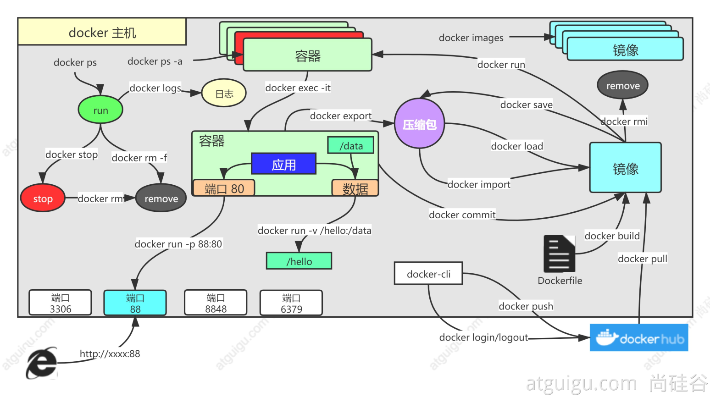

Docker命令实战
常用命令

基础实战
1. 找镜像
去docker hub，找到nginx镜像
docker pull nginx #下载最新版
镜像名:版本名（标签）
docker pull nginx:1.20.1
docker pull redis #下载最新
docker pull redis:6.2.4
## 下载来的镜像都在本地
docker images #查看所有镜像
redis = redis:latest
docker rmi 镜像名:版本号/镜像id
2. 启动容器
启动nginx应用容器，并映射88端口，测试的访问
docker run [OPTIONS] IMAGE [COMMAND] [ARG...]
【docker run 设置项 镜像名 】 镜像启动运行的命令（镜像里面默认有的，一般不会写）
# -d：后台运行
# --restart=always: 开机自启
docker run --name=mynginx -d --restart=always -p 88:80 nginx
# 查看正在运行的容器
docker ps
# 查看所有
docker ps -a
# 删除停止的容器
docker rm 容器id/名字
docker rm -f mynginx #强制删除正在运行中的
#停止容器
docker stop 容器id/名字
#再次启动
docker start 容器id/名字
#应用开机自启
docker update 容器id/名字 --restart=always
3. 修改容器内容
修改默认的index.html 页面
3.1 进入容器内部修改
# 进入容器内部的系统，修改容器内容
docker exec -it 容器id /bin/bash
3.2 挂载数据到外部修改
docker run --name=mynginx \
-d --restart=always \
-p 88:80 -v /data/html:/usr/share/nginx/html:ro \
nginx
# 修改页面只需要去 主机的 /data/html
4. 提交修改
将自己修改好的镜像提交
docker commit [OPTIONS] CONTAINER [REPOSITORY[:TAG]]
docker commit -a "leifengyang" -m "首页变化" 341d81f7504f guignginx:v1.0
4.1 镜像传输
# 将镜像保存成压缩包
docker save -o abc.tar guignginx:v1.0
# 别的机器加载这个镜像
docker load -i abc.tar
# 离线安装
5. 推送到远端仓库
推送镜像到docker hub；应用市场
docker tag local-image:tagname new-repo:tagname
docker push new-repo:tagname
# 把旧镜像的名字，改成仓库要求的新版名字
docker tag guignginx:v1.0 leifengyang/guignginx:v1.0
# 登录到docker hub
docker login
docker logout（推送完成镜像后退出）
# 推送
docker push leifengyang/guignginx:v1.0
# 别的机器下载
docker pull leifengyang/guignginx:v1.0
6. 补充
docker logs 容器名/id 排错
docker exec -it 容器id /bin/bash
# docker 经常修改nginx配置文件
docker run -d -p 80:80 \
-v /data/html:/usr/share/nginx/html:ro \
-v /data/conf/nginx.conf:/etc/nginx/nginx.conf \
--name mynginx-02 \
nginx
#把容器指定位置的东西复制出来
docker cp 5eff66eec7e1:/etc/nginx/nginx.conf /data/conf/nginx.conf
#把外面的内容复制到容器里面
docker cp /data/conf/nginx.conf 5eff66eec7e1:/etc/nginx/nginx.conf
进阶实战
1. 编写自己的应用
编写一个HelloWorld应用
示例代码： https://gitee.com/leifengyang/java-demo.git
2. 将应用打包成镜像
编写Dockerfile将自己的应用打包镜像
2.1 以前
Java为例
- SpringBoot打包成可执行jar
- 把jar包上传给服务
- 服务器运行java -jar
2.2 现在
所有机器都安装Docker，任何应用都是镜像，所有机器都可以运行
2.3 如何打包 Dockerfile
FROM openjdk:8-jdk-slim
LABEL maintainer=leifengyang
COPY target/*.jar /app.jar
ENTRYPOINT ["java","-jar","/app.jar"]
docker build -t java-demo:v1.0 .
3. 启动容器
docker run -d -p 8080:8080 --name myjava-app java-demo:v1.0
分享镜像
# 登录docker hub
docker login
#给旧镜像起名
docker tag java-demo:v1.0 leifengyang/java-demo:v1.0
# 推送到docker hub
docker push leifengyang/java-demo:v1.0
# 别的机器
docker pull leifengyang/java-demo:v1.0
# 别的机器运行
docker run -d -p 8080:8080 --name myjava-app java-demo:v1.0
4. 部署中间件
部署一个Redis+应用，尝试应用操作Redis产生数据
docker run [OPTIONS] IMAGE [COMMAND] [ARG...]
#redis使用自定义配置文件启动
docker run -v /data/redis/redis.conf:/etc/redis/redis.conf \
-v /data/redis/data:/data \
-d --name myredis \
-p 6379:6379 \
redis:latest redis-server /etc/redis/redis.conf